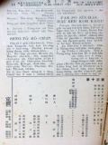

Languages
台文
｜
中文
｜
日本語
｜
English
字體
小
｜
中
｜
大
首頁
/
白話字數位典藏
白話字數位典藏全文檢索
查詢模式
選擇年代
清國時代(1885-1895)
日本時代(1895-1945)
戰後(1945-1969)
1885-1895
1896-1905
1906-1915
1916-1925
1926-1935
1936-1945
1946-1955
1956-1965
1966-1969
1970-1980
1980-1990
1990-2000
2000-2010
2010-
選擇文類
詩
散文
小說
戲劇
傳記
選擇作者
陳清忠
陳清義
編輯部
柯設偕
吳天命
明有德
偕叡廉
周天來
劉華義
王守勇
林茂生
陳添旺
柯維思
王占魁
賴仁聲
陳瓊琚
雪峰逸嵐
吳清鎰
郭水龍
蕭樂善
許水露
葉金木
陳金然
章王由
廖得
鄭連坤
潘道榮
楊士養
梁秀德
劉約翰
周淑慧
高金聲
林燕臣
黃六點
蔡愛義
許有才
主筆
巴克禮
陳鳩水
郭朝成
張基全
陳明清
陳能通
拾穗生
顏振聲
卓恆利
傳道局
胡文池
劉主安
鄭兒玉
柯--氏 Í-lī
詹德建
神學校
中學校
白雲居士
馬大衛
林照
Google Search
Yahoo Search
全部
刊名
標題
標題(教羅)
全文
全文(教羅)
作者
第9頁，共41頁(共813筆資料) 0.60852408409119sec
1
...
7
8
9
10
11
...
41
To Page
GO
文字列表
圖文列表
排序
日期
文類
刊名
作者
影像
[1935-2 台灣教會報/芥菜子 文類-詩 作者-柯--氏 Í-lī/Koa--sī Í-lī]
遐等我 [ Hia tán Goá ]
遐等我 1935.02 第599卷，芥菜子109號，p.24 (柯--氏Í-lī譯) 1.佇彼爿是咱祖家， 聖徒到遐見天父； 死失，到尾無權勢， 遐等我。 親像暗暝那過去， 就會成做大歡喜； 愛倒去佮主無離， 遐等我。 和。遐等我， 遐等我； 遐有活命的樹teh開， 遐等我。 死失，到尾無權勢， 佇彼爿是咱祖家； 聖徒到遐見天父， 遐等我。 2.遮所向望是空空， 相疼的情若眠夢； 天堂的大福無限， 遐等我。 佇河kiⁿ，光光普遍， 聖城內予人欣羨； 咱的信仰著著現， 遐等我。 3.天使所蹛的金城， 是teh呵咾主的名； 皇宮就是王的城，...
[1934-2 台灣教會公報 文類-散文 作者-劉華義/Lâu Hoâ-gī]
讀冊感想 [ Tha̍k-chheh kám-sióng ]
讀冊感想 (劉華義) 1934.2，no.587，pp.10-11 佇舊年的夏季，佇咱台灣的宗教界有出版一本冊，叫做「平民的基督傳。」就是高德章先生用伊的全精神勞碌來翻譯--的。 佇今仔日的世界，有一項大的事實佇teh；就是世界的人有漸漸teh欣慕愛就近耶穌。無論是科學家，是博士，是一般的平民攏有歡喜仆拜佇伊的面前，來承受伊高尚的教示，也愛徹底來深捌伊的人格。為著這款，宗教心覺醒的人的路用，佇教界有濟濟先生攑筆，用祈禱佮in的信仰體驗來發表耶穌的傳記。實在有濟濟人對遮的來捌耶穌基督。 咱台灣對早早就大欠用這款的冊。到佇今年才有通達咱的希望。咱通講這本的出版，就是做咱台灣宗教界的福...
[1927-8 芥菜子 文類-小說 作者-詹德建/Chiam Tek-kiàn]
(2)
老母予蜂叮著的時 [ Lāu-bú hō͘ phang tèng-tio̍h ê sî ]
「老母予蜂叮著的時。」 這个故事是我對一本冊看的，我看了有大感激我的心，也不止心適，所以我有想欲報予大家知。若會做大家的利益是真好。 「有一擺一个牧師，問一个囡仔講，你對甚物是就捌救主，也你的罪，得著赦免的事你kám實在知影mah？囡仔隨時應講著，我的罪得著赦，我有實在知影。」「你會知是甚物時？」囡仔隨時in講，「老母予蜂叮著的時」。「老母予蜂叮著的時，這是甚物意思？」囡仔應講；我的老母對真早的時，就常常教示我講救主有替我死，總是我袂會了解彼个意思。有一年的夏天，老母佇灶腳的隔壁間，兩个手ńg pih懸懸teh熨衫我佇外口的埕teh thit-thō 的時，忽然一隻的虎頭蜂...
[1927-3 芥菜子 文類-選擇文類 作者-神學校/Sîn-ha̍k-hāu]
(1)
北部神學校欲閣開 [ PAK-PŌ͘ SÎN-HA̍K-HĀU BEH KOH KHUI ]
北部神學校欲閣開 北部神學校佇今年4月按算欲閣開。場所佇淡水舊的醫館。無久許可會落來。所以若有人志願愛入--學，請，參考下面所排列的事項，量早寄入學願佮履歷書來交傳道局。1、入本科的資格：著愛中等學校第 3 學年修了；抑是有同程度的學歷的人(總是著試驗。)無論欲入本科抑是預科，攏著愛傳道師的舉薦，洗禮了，品行方正、身體勇健、熱心的青年才會用得。...
[1927-2 芥菜子 文類-選擇文類 作者-神學校/Sîn-ha̍k-hāu]
(1)
北部神學校欲閣開 [ PAK-PŌ͘ SÎN-HA̍K-HĀU BEH KOH KHUI ]
北部神學校欲閣開！ 北部神學校佇今年4月按算欲閣開，場所佇淡水舊的醫館。無久許可會落來。所以若有人志願愛入學，請參考下面所排列的事項，量早寄入學願佮履歷書來交傳道局。 1、 入本科的資格：著愛中等學校卒業。 1、 入預科的資格：著愛中等學校第三學年修了；抑是有同程度的學歷的人(總是著試驗。)無論欲入本科抑是預科，攏著愛傳道師的舉薦、洗禮了，品行方正，身體勇健，熱心的青年才會用得。...
[1927-3 芥菜子 文類-選擇文類 作者-中學校/Tiong-ha̍k-hāu]
(1)
生徒募集 [ SENG-TÔ͘ BŌ͘-CHI̍P ]
生徒募集 本年4月的新學期，淡水中學欲閣募集新的學生。排列幾若項通做參考：－ （1）、募集人員：90名。(2)、應募資格：小、公學卒業 (3)、試驗期日：4月4日。(4)、試驗科目：算術、國語、作文。(5)、試驗場所：本校、新竹、大甲、宜蘭。 若愛知較詳細的人請寄2 sián 的切手來當局討入學的案內去看。...

[1927-2 芥菜子 文類-選擇文類 作者-中學校/Tiong-ha̍k-hāu]
(1)
生徒募集 [ SENG-TÔ͘ BŌ͘-CHI̍P ]
生徒募集！ 本年4月的新學期，淡水中學欲募集新的學生。排列幾若項通做參考：－ (1)、募集人員：90名(2)、應募資格：小、公學卒業(3)、試驗期日：4月4日。(4)、試驗科目：算術、國語、作文。(5)試驗場所；本校、新竹、大甲、宜蘭。 若愛知較詳細的人，請寄 2 sián 的切手來當局討入學的案內去看。...
[1927-2 芥菜子 文類-詩 作者-白雲居士/Pe̍h-hûn Ku-sū]
(1)
斷腸夜 [ Toān-tiông-iā ]
斷腸夜 (新體詩) 北風凜凜雨茫茫， 暗夜深更我一人。 目睭欲siap火欲hoa， Gia̍h筆來寫這幾choā。 欲寫啥物我毋知， Kan-ta目屎走出來。 傷心欲共啥人講， 世態，人情是冰霜。 下昏就是過年暗， 家家戶戶luí lâm-lâm。 歡歡喜喜倚爐邊， 相佮慶賀祝團圓。 火爐炎炎添光彩 新婚氣氛滿出來。 秦樓楚閣會 biân-biân， 絃管歌聲遍地天 只有戇人teh吐氣， 目屎流落四淋垂。 遮个攏是錢的影， 人是黃金的形，聲。 可憐今暗有所在， 加添目屎佮悲哀！ ...
[1927-1 芥菜子 文類-選擇文類 作者-馬大衛/Má Tāi-pit]
(1)
報告 [ Pò-kò ]
報告 舊年度北部教會寄附上海聖書公會的寄附金已經入in 的手。佇舊年12月下旬有收著in所寄的領收証佮感謝狀。 這tia̍p寫幾字報予列位知，紲排列寄附的教會佮金額佇下底：－ 新竹教會 ￥ 14.60 大稻埕教會 " 13.70 中壢教會 " 10.00 鳳林教會 " 7.60 艋舺教會 " 6.19 龍潭埤教會 " &...
[1933-6 台灣教會公報 文類-傳記 作者-林照/Lîm Chiàu]
小傳：女長老升天 [ Sió-toān: Lú Tiúⁿ-ló seng-thian ]
小傳 女長老升天 林照 記 1933.06, no. 579, pp. 18-19 林--氏貴妹是豐原教會的女長老，也是豐原女界的名星。 佇3月18號，有傳達講，"主的天使真濟欲來chih我，若來的時，毋通直直共我叫，來予我艱苦離開。" 竟然到22號拜三暗，受主接納上天，享壽63歲。 伊的離開，宛然失落一粒的光星，予教會，社會毋甘，街頭巷尾，大大細細念伊的名佮伊的做人。 啊！ 伊的死，真正是勝利的死，莫怪主愛伊轉去來享受天的生活。 若是伊過去的所做，實在成做現在佮將來的數念。 寫淡薄紹介伊的生平，做人親切，仁愛，疼主，疼教會，gâu接待人，成做這个。 ...
[1934-2 台灣教會公報 文類-散文 作者-林照/Lîm Chiàu]
讀聖經 [ Tha̍k Sèng-keng ]
讀聖經 (林照) 1934.2，no.587，pp.4 聖經干證耶穌是基督，是救主(行 18：28；翰 5：39)。 就是救人靈魂，予人重頭生的道理(雅 1：21；1比1：23)。所以見若愛得著救佮新生命的人，著讀聖經。 聖經是咱活命的米糧(太4：4)，滋養的要素(1比2：2)；所以愛活命活潑長大--的，著讀聖經。 聖經是予人好品行，人格完全(II提3：16，17)；所以愛有人格懸的人，著讀聖經。 聖經是咱腳前的燈，路裡的光(詩篇119：105)；所以欲佇這烏暗的世間無跋倒--的，著讀聖經。 聖經是咱刣對敵的寶劍(弗6：17)，所以欲刣贏魔鬼--的，著讀聖經。 ...
[1933-4 台灣教會公報 文類-散文 作者-許水露/Khó͘ Chuí-lō͘]
海外ê聲 [ Hái-goā ê Siaⁿ ]
海外ê聲（許水露）1933. 04, no. 577, pp. 6-7 1. 舊年12月初6日，下晡一點，大阪南大江女子尋常高等小學校ê校長kap 4个教員，chhōa 5年生150名，來訪問天滿組合教會。查-問彼个實情，chiah知是調工停課，chhōa學生欲來禮拜。本堂ê木川牧師聽著按呢，意外ê大歡喜，就讀約翰3 : 16節ê聖句，做題說教。聽眾受大感激。真感謝上帝。願上帝koh感動通國ê教育者，會尊重兒童禮拜。 2. 印度Bong-gá-lī教會ê女信徒，真熱心。Chia &ecir...
[1934-11 台灣教會公報 文類-散文 作者-許水露/Khó͘ Chuí-lō͘]
孤兒院的開祖梅叡廉 [ Ko͘-jî-īⁿ ê khai-chó͘ Muî Joē-liâm ]
孤兒院的開祖梅叡廉 (ジョージ、ミユーラー) (許水露) (接前號第12面) 1934. 11，no. 596，pp. 14-15 In的集會特別注重聖神的感動。In聚會的形式，較親像祈禱會的款，毋限定司會者家己講若定；就是不論甚物人若受聖神的感動，攏通自由徛起來講，抑是欲chhoā人祈禱，也是好。 伊決心無欲提一定的薪金。因為伊決意萬事欲倚靠上帝，無欲倚靠人。伊不論欲做甚物事，攏代先問上帝的意志，然後才問人的意見來做參考。上帝若指示伊著做的事，雖然頭前有真濟的難關，伊也無忍neh，專靠上帝的大權能，好膽直向前。雖是按呢，伊沓沓拄著魔鬼的刺。捌一擺伊的心內咧想，「雖然佇18...
[1934-10 台灣教會公報 文類-傳記 作者-許水露/Khó͘ Chuí-lō͘]
孤兒院的開祖梅叡廉 [ Ko͘-jî-īⁿ ê khai-chó͘ Muî Joē-liâm ]
孤兒院的開祖梅叡廉 (ジョージ‧ミユーラー) （許水露） 1934. 10，no. 595，pp. 11-12 梅叡廉 (ジョージ‧ミユーラー)原來是德國人。伊佇A. D. 1805年9月27日出世佇プロシヤ的クロツペンスタット裡。伊的老爸是咧做國產局租稅集金人為著按呢沓沓換所在。梅叡廉出世後，隔無幾年，就全家搬徙去ハイメルスレーベン。21歲的時搬去踮佇近マグデブルヒ的シェーネベック裡。 伊細漢的時，得著老爸的溺愛，養成濫費的歹習慣。伊10歲左右就真gâu共老爸偷提錢佮講白賊話。伊的老爸想愛予伊做宗教家，所以11 歲的時就送伊入ハルベルスタット會堂的附屬學校。無拍算，伊佇這中間...
[1933-10 台灣教會公報 文類-散文 作者-許水露/Khó͘ Chuí-lō͘]
女性的使命 [ Lú-sèng ê Sù-bēng ]
女性的使命 Huī-ú Seng 1933.10 許水露譯 女性有女性尊貴的使命佇咧。女性若會自覺伊的使命，深知伊的使命，實行伊的使命，就有永遠的幸福。女性是下佇犧牲生活的境遇裡 (犧牲生活之境遇)：著生產，著栽培囝兒；這就是做老母的犧牲。 著料理家事，這就是做一家的主婦的犧牲。通講女性的犧牲，是在佇伊日常生活的一切(日常生活的一切)。 對女性的犧牲，囝兒生長，一家得團圓。丈夫佇社會，國家會得成功；就是佇伊的裏面(裏面)有賢妻暗中的援助佇咧。 女性有強的忍耐力 (忍耐力)佇咧。設使若欠缺忍煩惱的苦境。女性佇伊的境遇上佮使命上，著特別欠用這款的忍耐力。若欠缺忍耐力的女性，定著會得盡...
[1933-4 台灣教會公報 文類-散文 作者-許水露/Khó͘ Chuí-lō͘]
高雄中會：國寶就是人物 [ Ko-hiông Tiong-hoē:Kok-pó chiū-sī jîn-bu̍t ]
國寶就是人物（許水露）1933. 04, no. 577, pp. 5 國家ê憂慮不在非常時，是在佇欠缺會處理非常時ê人物。若有彼款人物，就非常時會得開轉。對按呢，pek-liân chi代價會得成立。 國家ê憂慮不在物資ê缺乏，是在佇欠缺會指導國家，開拓國運ê大人物。 國家ê憂慮不在國內無富翁、無黃金；是在佇欠缺彼款會造出富有ê克己、勤勉、忍耐力行ê精神ê人物。早年Teng-bo̍at-kok (Denmark) ê國土真bái，物資財源缺乏...
[1931-5 台灣教會報 文類-詩 作者-許水露/Khó͘ Chuí-lō͘]
基督的兵 [ Ki-tok ê Peng ]
基督的兵 1931.05 第554卷 p.4 (許水露) Key BÞ. 這首的詩調，就是借讚美歌下篇217首的調。 1.號頭著大霆求主來幫贊， 對敵已經近前欲害咱， 戰旗攑--起-來，用信做籐牌， 身軀整齊向前佮伊刣， Chorus Ti-tah，ti-tah，號頭teh大霆lah 對敵刣輸四散teh走lah Ti-tah，ti-tah，著齊唱和撒那 呵咾主耶穌贊咱好膽 2.向前著向前好膽直向前， 受主揀選勇敢的兵丁， 今日teh艱苦，明日teh得勝， 感謝救主賜咱大太平。 3.懇求主耶穌贊咱好膽戰， 暝日為主phoe命無嫌siān， ...
[1928-10 台灣教會報 文類-散文 作者-許水露/Khó͘ Chuí-lō͘]
對祈禱予人活 [ Tuì Kî-tó hō͘ lâng oa̍h ]
對祈禱予人活 許水露 1928.10.01 523卷p.9 Chi̍p-chip pè-hoē，創設以來歷過四年。信者小數，社會迷信做深，鄙人接任 (本年4月)以來，信者大細ta̍uh-ta̍uh拄著病痛(會外閣較傷重) ：是因為氣候不順，地氣變遷。醫生館藥店那廟宇，不時患者tīⁿ that-that。 中間Bān-sêng叔 (信者張Ban-sêng)一家八人，病六個。對新曆7月18號，就落來踮佇街--ni̍h Hô-sùn館。每日請醫生診察，服藥幾若禮拜，不見功效。反轉病勢那沉重。 對8月初，鄙人佮在街幾若个兄姊逐早起佇遐做早天的祈禱會。感謝上帝！了後大家服藥大功效，日...
[1928-9 台灣教會報 文類-散文 作者-許水露/Khó͘ Chuí-lō͘]
受試的耶穌 [ Siū-chhì ê Iâ-so͘ ]
受試的耶穌 許水露 1928.09.01 522卷p.2 (接前號第5面) 雖然是按呢iáu-kú撒旦的刺無欲煞。無受餅只有受上帝的話耶穌佇不知不覺的中間伊的心想到佇耶路撒冷城上帝的聖殿裡。想講伊的跤徛佇殿頂裡，這个檢采是佇彼个殿的西南爿向對Khip-lûn 的山谷的 「王的 léng-lông」的厝頂也無的確。約瑟su (Josephus，就是歷史家)有講人若徛蹛遐看對下面落去就有袂通測度的萬底深坑lah。或者佇彼个對東爿向對siāng山谷落去的 「所羅門的 léng-lông」，也無的確照傳說。耶穌的兄弟雅各後來有予對敵抌對遐落去。不管thaⁿ lah，to耶穌徛佇聖殿...
[1928-8 台灣教會報 文類-散文 作者-許水露/Khó͘ Chuí-lō͘]
受試的耶穌 [ Siū-chhi ê Iâ-so͘ ]
受試的耶穌 許水露 1928.08.01 521卷p.5-6 耶穌的人格佇世間無人會通佮伊比得。咱若看歷史就會知有真濟的偉人；總是無一个有親像耶穌彼款理想的圓滿的人格。愈大的偉人就有愈大的缺點。除耶穌以外，無一个有親像伊，也有人的性，閣也有上帝的性--ê。伊雖然有強烈的個人tek 的性格佇teh，iáu-kú伊的跤毋捌一擺著觸，言行舉止毋捌違逆天理佮人道。伊雖然有遐爾teh偉大的人物，iáu-kú無一个會親像伊遐爾teh gâu厚待人。伊講，「人子到，毋是欲差用人，是欲予人差用。」不論啥物偉人的偉大，耶穌都比in較偉大。別的偉大是屬動；若是耶穌的偉大是屬靜。In 的偉大是支配人的偉...
第9頁，共41頁(共813筆資料)
1
...
7
8
9
10
11
...
41
To Page
GO
數位典藏國家型科技計劃
拓展台灣數位典藏計畫
版權所有 國立台灣師範大學 台灣文化及語言文學研究所©2008
10610 台北市和平東路一段162號│TEL 02-7734-5516│Fax 02-2358-2461
計劃簡介
典藏特色
執行架構
計畫典藏數位化流程
成員介紹
台灣白話字發展簡介
巴克禮牧師與《台灣教會公報》
廈門話字典-杜嘉德
白話字教學-打馬字
中國南方白話字發展
台灣基督教長老教會簡表
台灣基督教長老教會教會歷史委員會
《北部台灣基督長老教會教會ê歷史》
關於陳清忠
白話字文學：台灣文學的早春